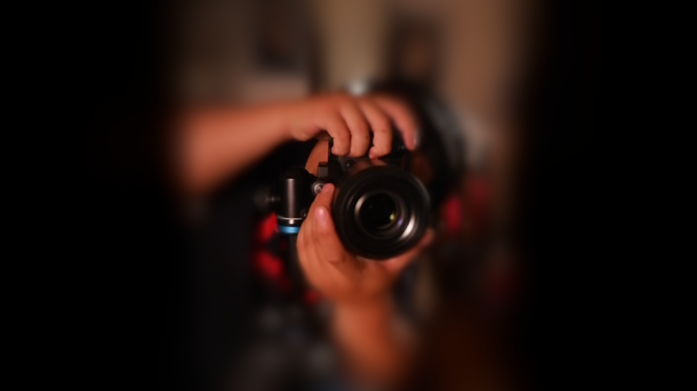

Photography that elevates brands.
Scroll
Commercial photography crafted for modern brands. From restaurants and cafés to premium products and authentic portraits, we create imagery that tells compelling visual stories and elevates every brand.